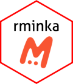

rminka 
Usage
Minka is a citizen science platform created by the research group EMBIMOS of the Institut de Cienciès del Mar (ICM-CSIC). The platform is open for all users to create their projects, collaborate on others, help the community with identifications or simply upload observations that will be validated with the help of the community and that can be used, in the future, to contribute openly to science and the improvement of the environment.
The link to access Minka’s website is https://minka-sdg.org/
The goals of the rminka package are:
Directly access the data stored in the Minka platform to be able to process them with R through the API.
Treat the data to be able to use them directly with other packages such as
vegan,dismo,labdsvor others.
Overview
rminka is a toolkit for interacting with the Minka API, providing a consistent set of functions to help you query and retrieve biodiversity data. The package’s functions are grouped by the type of data they return:
a) User Queries: Functions to find users and their contributed observations.
-
mnk_user_byname(): Finds a user’s ID ( user_id) from their approximate login name. -
mnk_user_info(): Retrieves detailed user information using its known ID (user_id) -
mnk_user_proj(): Find the projects to which a user has explicitly subscribed based on their user_id. -
mnk_user_obs(): Retrieves all observations contributed by that user for a given year ( all the year or only a specific month) from their user_id.
b) Project Queries: A set of complementary functions to find projects and their associated observations.
-
mnk_proj_byname(): Finds a project’s ID (project_id) using an approximate project name. -
mnk_proj_info(): Retrieves detailed project information using its known ID (project_id). -
mnk_proj_user(): Find the users, and associated metadata, explicitly subscribed to a given project by the project_id. -
mnk_proj_obs(): Fetches all observations for a specific year within that project.
c) Place Queries: Functions to find places and retrieve their spatial data.
-
mnk_place_byname(): Finds the place´s ID (place_id) for a location using an approximate place name. -
mnk_place_sf(): Returns thesfgeometry for a place given its place_id, ready for plotting with packages likeggplot2orleaflet. -
mnk_place_obs(): Retrieves all observations for a place for a given year (all the year or only a specific month) from their place_id .
d) Observation Queries: A variety of functions to fetch observation data based on different parameters.
-
mnk_obs_id(): Retrieves a single observation’s complete data using its unique ID (id). -
mnk_obs(): Fetches observations based on various parameters for a full year, a specific month, or a single day. -
mnk_obs_byday(): Retrieves all observations within a date range in the same year.
e) Auxiliary functions: A set of functions with different utilities that complement Minka’s observational data and help in processing them when used in other R packages (vegan, dismo, labdsv or others).
-
export_mnk_qgis(): Converts one or moresflayers with different geometry types (points and polygons) to GeoPackage (.gpkg) format usualy used in Qgis. By default, it uses CRS=4326 (WGS 84), but the same function can transform to a different CRS. -
mnk_obs_sf(): This function converts a Minka observation tibble into a geometric sf layer. The same function allows you to select what information it will contain (none by default). It also uses CRS=4326 (WGS 84) by default, but the same function can transform it to a different CRS. -
get_wrm_tax(): Retrieves the complete taxonomy and additional data (e.g., marine or terrestrial ) from WoRMS for a given scientific name. -
shrt_name(): Returns the CEP name (abbreviated scientific name) with separation point, given a scientific name.
These functions are designed to be used together. For queries that span multiple years, you can easily loop through the years of interest, run the appropriate function, and then combine the resulting tibbles with dplyr::bind_rows().
Installation
You can install the development version of rminka from GitHub with:
# install.packages("pak")
pak::pak("devMinka/rminka")Using rminka
If you are new to rminka you are better off starting with a starting web page of rminka in the github page of the project.
The main page directions is rminka website
The starting web page is rminka starting
Getting help
There are two main places to get help with rminka:
The RStudio community is a friendly place to ask any questions about R.
Stack Overflow is a great source of answers to common R questions. It is also a great place to get help, once you have created a reproducible example that illustrates your problem.
If you encounter a clear bug, please file an issue with a minimal reproducible example on GitHub.
Code of Conduct
Please note that the rminka project is released with a Contributor Code of Conduct. By contributing to this project, you agree to abide by its terms.
Contributing
Contributions are welcome! Please see CONTRIBUTING.md for guidelines.
To contribute:
- Fork the repo and create your branch from
main. - If you’ve added code, add tests.
- Ensure the test suite passes:
devtools::test(). - Make sure
R CMD checkis clean:devtools::check(). - Submit a pull request.
For bugs or feature requests, please file an issue first to discuss what you would like to change.